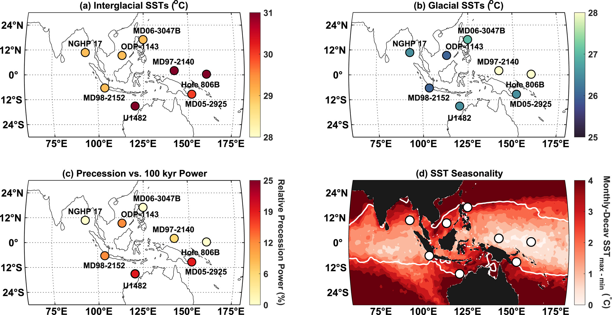
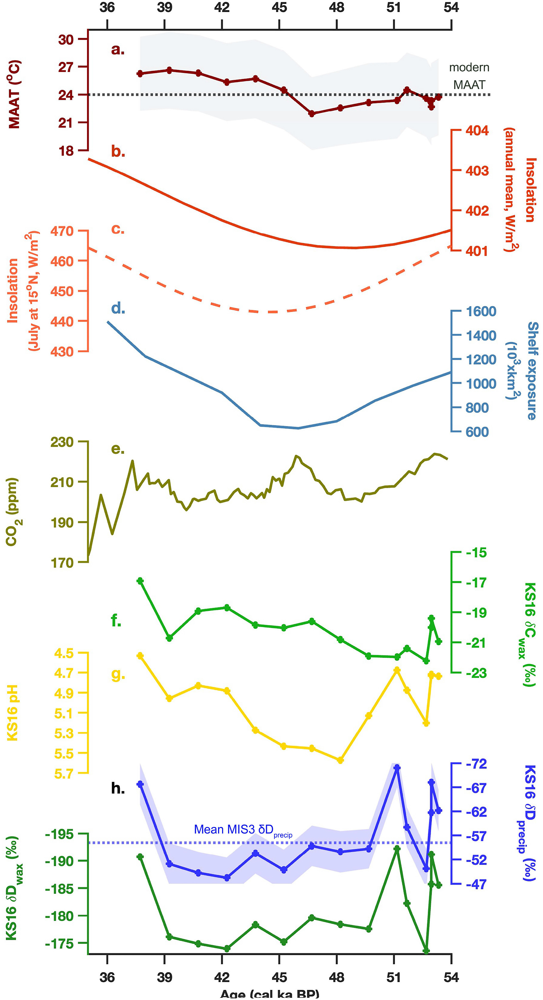

Research
I am a Ph.D. candidate in Geosciences at the University of Arizona. My research uses organic geochemical biomarkers preserved in marine and terrestrial sediments — particularly microbial lipids and fossil leaf waxes — to reconstruct past temperature and hydroclimate over thousands to millions of years. I also integrate these proxy records with climate model simulations to investigate the mechanisms driving past climate variability and to evaluate how well models capture climate states very different from today. Understanding how the climate system responded to past warm and cold extremes helps us better constrain how temperatures and precipitation will respond to rising CO₂ in the future.
Biomarker constraints on Indo-Pacific Warm Pool temperature during the Late Pleistocene: the role of orbital forcing
In this paper in AGU Paleoceanography and Paleoclimatology we use three independent proxies — TEX86, UK′37, and Mg/Ca — from IODP Site U1482, located off northwestern Australia at the southernmost margin of the Indo-Pacific Warm Pool, to reconstruct sea surface temperatures over the past 650 kyr. Our findings demonstrate that both glacial–interglacial cycles and precession govern SST and productivity variations in the IPWP, with their relative importance varying spatially and across frequency bands.

Biomarker reconstructions of temperature and hydroclimate variability in Vietnam during Marine Isotope Stage 3
In this Quaternary Science Reviews paper we reconstruct past terrestrial paleotemperatures using branched GDGTs (brGDGTs), and hydroclimate and vegetation changes using leaf-wax hydrogen and carbon isotopes, during MIS 3 in the Central Highlands of Vietnam. We highlight the coupled effects of obliquity and precession on South Asian climate, and the importance of continental shelf exposure in modulating local temperature, rainfall patterns, and vegetation cover.
